75+ gatunków
35+ leczniczych
25+ kulinarnych
12 z pełnym opisem
8 chronionych / toksycznych ⚠
lecznicza — stosowana w ziołolecznictwie
jadalna — zastosowanie kulinarne
trująca ⚠ — toksyczna (całkowicie lub częściowo)
chroniona — pod ochroną gatunkową
rzadka — rzadki lub regionalny gatunek
Wczesna wiosna (marzec – kwiecień)
Pierwsze rośliny pojawiające się po zimie — często na rozmrożonych glebach, skarpach, miedzach. Bezcenne po zimowym niedoborze witamin.

Podbiał pospolity
Tussilago farfara · rodzina astrowate
lecznicza
Pierwszy żółty kwiat wiosny! Kwitnie od marca, zanim pojawią się liście. Duże, kształtem kopyta konia, białe liście od spodu. Na glinkach, wykopaliskach, brzegach pól. Suchy kaszel, inhalacje, okłady.
⚠ Alkaloidy pirolizydynowe — max 4-6 tygodni kuracji! NIE dla dzieci <6 lat, ciąży.
📖 Pełny opis →
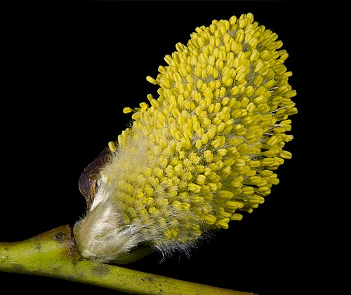
Wierzba iwa (bazie)
Salix caprea · rodzina wierzbowate
lecznicza
Pierwsze bazie (kocanki) — cenne źródło pokarmu dla pszczół. Kora wierzby zawiera salicynę (prekursor aspiryny) — działa przeciwbólowo i przeciwzapalnie. Odwar z kory na gorączkę, bóle głowy, reumatyzm.
⚠ Nie stosować przy alergii na salicylany (aspiryna). Uważaj przy chorobach nerek.
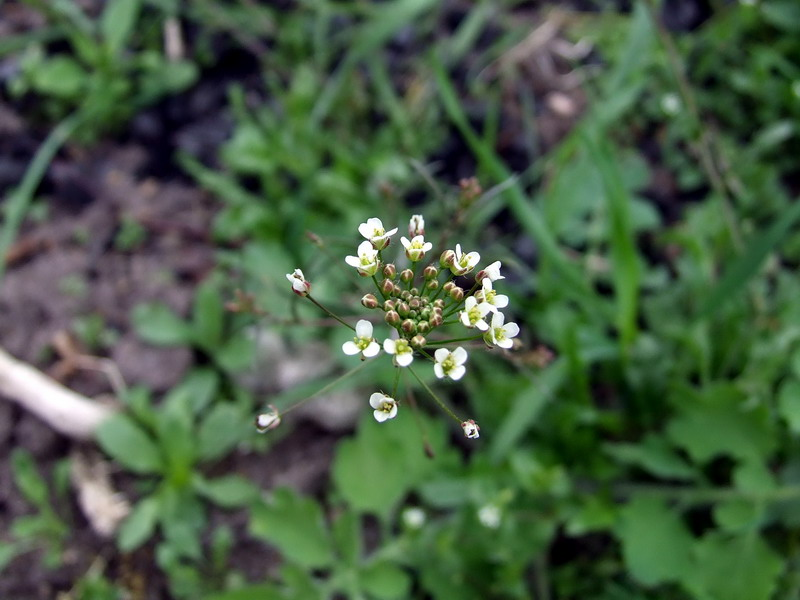
Tasznik pospolity
Capsella bursa-pastoris · rodzina kapustowate
leczniczajadalna
Pospolity chwast ogrodowy i polny. Charakterystyczne torebki nasienne w kształcie serduszka/torebki pasterza. Młode liście jadalne (sałatki, zupy). Medycznie: zatamowanie krwawień wewnętrznych, regulacja cyklu.
⚠ Nie stosować w ciąży (silne działanie na macicę). Nie mylić z trującymi chwastami kapustowatymi.
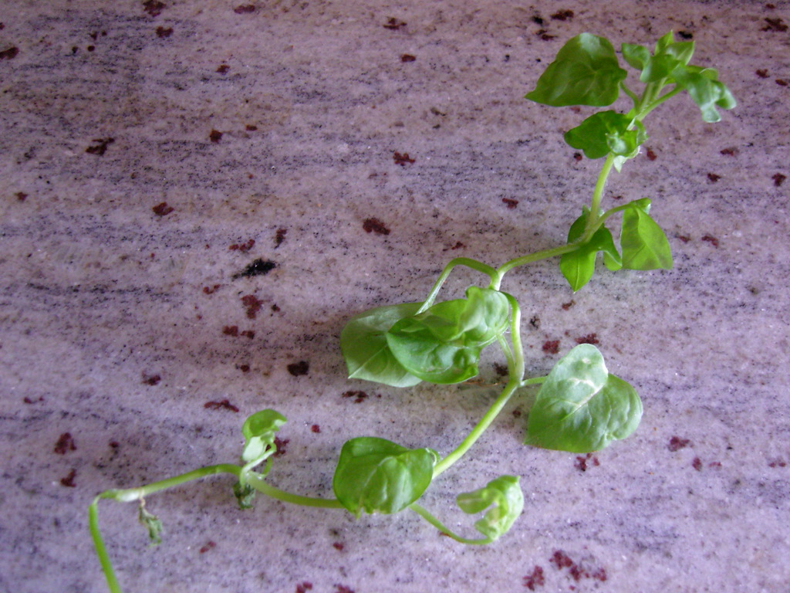
Gwiazdnica pospolita (kurze ziele)
Stellaria media · rodzina goździkowate
leczniczajadalna
Jeden z pierwszych wiosennych chwastów. Drobne gwiazdkowate białe kwiaty. Bogata w witaminę C, żelazo i witaminy B. Jadalna przez cały rok — doskonały składnik sałatek i koktajli. Zewnętrznie: łagodzi świąd, egzemy, rany.
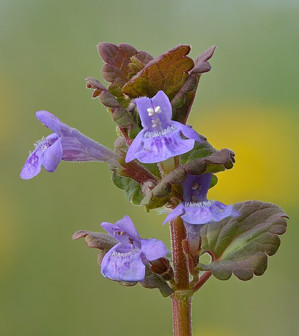
Bluszczyk kurdybanek
Glechoma hederacea · rodzina jasnotowate
leczniczajadalna
Pełzająca, aromatyczna roślina o okrągłych liściach. Intensywny zapach przy roztarciu. Historyczne zastosowanie w warzeniu piwa (przed chmielem). Napar na drogi oddechowe, zatoki, trawienie. Liście do sałatek i zup.

Kniec błotna (kaczeniec)
Caltha palustris · rodzina jaskrowate
trujaca (surowa)
Jeden z pierwszych wiosennych kwiatow na wilgotnych lakach i brzegach wod. Lsnace zolte kwiaty (III–V) zwiastuja wiosne. Surowa roslina zawiera protoanemonine — draznaca i toksyczna substancje. Historycznie paki kwiatowe marynowano jak kapary (po gotowaniu toksyna znika). Rosnie nad strumieniami i na mokrych lakach.
Surowa roslina trujaca (protoanemonina). Gotowanie neutralizuje toksyne. Nie spozywa sie surowych lisci ani kwiatow.
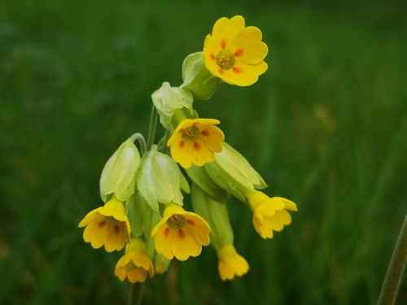
Pierwiosnek lekarski (klucze św. Piotra)
Primula veris · rodzina pierwiosnkowate
leczniczachroniona
Wczesnowiosenny kwiat suchych lak i skrajow lasow. Zolte kwiaty zwisajace w charakterystyczny sposob — intensywny, slodki zapach. Korzen bogaty w saponiny i glikozydy — wyrztuśny (syrop na kaszel, zapalenie oskrzeli). Kwiaty jadalne i do herbaty. Gatunek objetyczny ochrona czesciowa w Polsce.
Gatunek objetyczny ochrona czesciowa — zbierac tylko z licznych stanowisk i z umiarem.
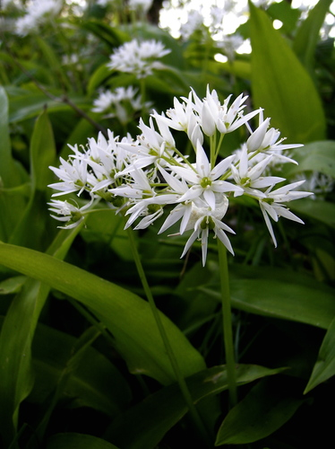
Czosnek niedźwiedzi
Allium ursinum · rodzina amarylkowate
jadalnalecznicza
Jeden z najcenniejszych wiosennych darow lasu. Intensywny zapach czosnku — biale kwiaty pokrywajace wilgotne lasy lisciaste (IV–V). Liscie to naturalny antybiotyk — pesto, maslo czosnkowe, zupy, salatki. Obniža cisnienie krwi i cholesterol. Silniejszy od czosnku ogrodowego.
NIEBEZPIECZNA POMYLKA: Przed kwitnieniem liscie sa bardzo podobne do konwalii majowej (silnie trujacej!) i ciemiernicy. Zawsze sprawdz zapach — czosnek niedzwiedzi WYRANIE pachnie czosnkiem po roztarciu.
Wiosna (kwiecień – czerwiec)
Najbogatszy okres zbiorów — mnóstwo wartościowych roślin wybucha jednocześnie. Priorytet: liście i kwiaty zebrane przed pełnią lata.

Mniszek lekarski (mlecz)
Taraxacum officinale · rodzina astrowate
leczniczajadalna
Ikoniczna roślina łąk. Kwiaty (IV–V) na syrop „miód majowy". Liście w sałatkach — gorzkawe, bogate w witaminy A i C. Korzeń (jesień) — kawa zbożowa, odtrucie wątroby. Moczopędny.
📖 Pełny opis →
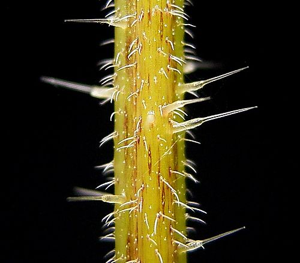
Pokrzywa zwyczajna
Urtica dioica · rodzina pokrzywowate
leczniczajadalna
Wszechobecna roślina wilgotnych siedlisk. Szczypie od włosków z kwasem mrówkowym. Po sparzeniu wrzątkiem — wyśmienity szpinak, barszcz, pesto. Bogata w żelazo, krzem, witaminę K. Wzmacnia włosy, oczyszcza krew.
📖 Pełny opis →
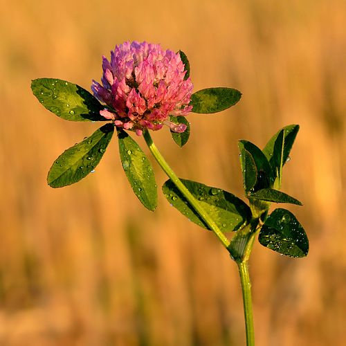
Koniczyna łąkowa
Trifolium pratense · rodzina bobowate
leczniczajadalna
Dominanta polskich łąk. Kwiatki jadalne — słodkie, idealne do sałatek, herbat, syropów. Liście suszone — mąka chlebowa (historycznie). Medycznie: fitoestrogeny — na dolegliwości klimakteryjne, kaszle. Pszczeli miód koniczynowy.
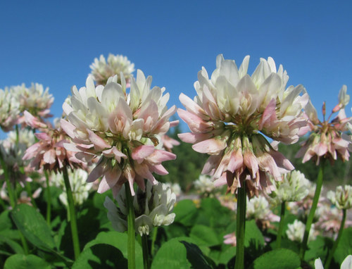
Koniczyna biała (rozłogowa)
Trifolium repens · rodzina bobowate
jadalna
Niższa od łąkowej, rośnie na trawnikach i przy ścieżkach. Białe kwiatki jadalne — do sałatek, tart, herbat. Delikatniejszy smak niż koniczyna łąkowa. Dobra roślina miodna.

Babka lancetowata / babka zwyczajna
Plantago lanceolata / P. major · rodzina babkowate
leczniczajadalna
Dwa gatunki — lancetowata (wąskie liście, łąki) i zwyczajna (szerokie liście, deptak). Oba lecznicze. Syrop na kaszel, okłady na rany i użądlenia. Nasiona = prebiotyk. Młode liście do sałatek (ziemisty smak).
📖 Pełny opis →
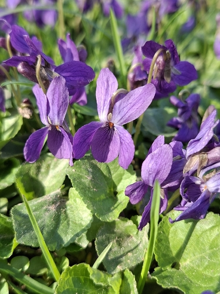
Fiołek trójbarwny (bratek polny)
Viola tricolor · rodzina fiołkowate
leczniczajadalna
Mały przodek ogrodowych bratków. Trójkolorowe kwiatki (fiolet, żółty, biały). Kwiaty jadalne i dekoracyjne — do sałatek, lodu, tortów. Napar ze ziele na ekzemy, trądzik, kaszel dziecięcy. Lekko słodkawy smak.
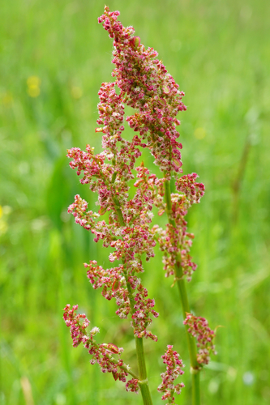
Szczaw pospolity
Rumex acetosa · rodzina rdestowate
leczniczajadalna
Klasyka polskiej kuchni. Charakterystyczny kwaśny smak (kwas szczawiowy + witamina C). Zupa szczawiowa z jajkiem — tradycyjne danie wiosenne. Surowe liście w sałatkach, sosy do ryb. Leczniczo: na układ trawienny, dezynfekcja drobnych ran.
⚠ Ograniczyć przy kamicy nerkowej i dnie moczanowej (szczawiany). Nie jeść surowego w dużych ilościach.
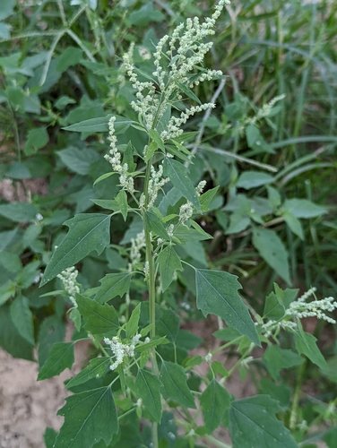
Komosa biała (lebioda)
Chenopodium album · rodzina szarłatowate
jadalna
Pospolity chwast ogrodów i pól. Bliski krewny quinoa. Młode liście i wierzchołki smakują jak szpinak — doskonałe do gotowania, pieczenia, sałatek. Bogata w białko, żelazo, wapń, witaminę A. Historycznie ważna roślina głodowa.
⚠ Surowa zawiera saponiny i szczawiany — jadać gotowaną lub krótko blanszowaną.

Czarny bez (kwiat)
Sambucus nigra · rodzina piżmaczkowate
leczniczajadalnasurowe owoce ⚠
Baldachogrona kremowych kwiatów (V–VI) — syrop, napar napotny, smażone w cieście. Owoce (VIII–IX) na odporność — tylko po gotowaniu! Silne działanie antywirusowe potwierdzone badaniami.
📖 Pełny opis →
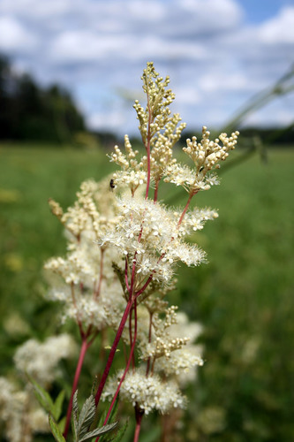
Wiązówka błotna (tawula)
Filipendula ulmaria · rodzina różowate
leczniczajadalna
Wyniosla roslina mokrych lak z kremowymi, intensywnie pachnacymi kwiatami (VI–VIII). Zawiera salicylany — naturalna aspiryna. Napary na goraczke, bole glowy, reumatyzm, zgage i stany zapalne. Kwiaty aromatyzuja napoje, dżemy i syropy. Dawniej aromatyzowala mid pitny.
Zawiera salicylany — nie stosowac przy alergii na aspiryne i u dzieci ponizej 12. roku zycia.
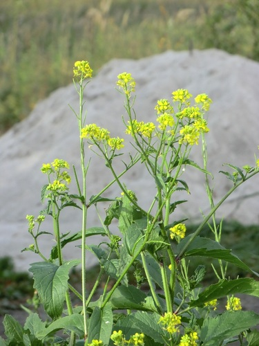
Gorczyca polna
Sinapis arvensis · rodzina kapustowate
jadalna
Pospolity chwast pol zbozowych i ugorow — zolte kwiaty zloca pola od kwietnia do lipca. Mlode liscie jadalne — pikantne jak rukola, do saladek i zup. Nasiona mielone jako musztarda polna. Bogata w glukozynolany o wlasciwosciach prozdrowotnych. Bardzo pospolita — latwa do znalezienia.
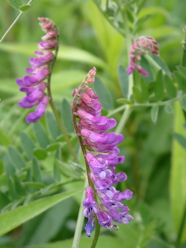
Wyka ptasia
Vicia cracca · rodzina bobowate
lecznicza
Wijaca sie roslina pnaca z fioletowymi kwiatostanami. Bardzo pospolita na lakach, miedzach i przydrożach. Wazna roslina miodna i pastewna. Napar z ziela stosowany w medycynie ludowej na rany i stany zapalne skory. Nasiona trujace w wiekszych ilosciach — nie spozywa sie.
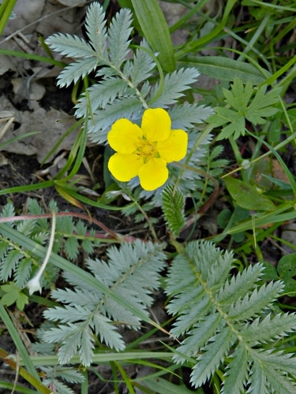
Pięciornik gęsi (srebrnik)
Argentina anserina · rodzina różowate
leczniczajadalna
Rozeslana roslina o srebrzyście owlosionych lisciach (stad „srebrnik"). Zolte kwiatki na wilgotnych przydrożach i lakach. Liscie w naparze silnie sciagajace — na biegunki, stany zapalne jamy ustnej, bolene miesiaczkowanie. Korzenie jadalne gotowane. Bardzo pospolita na przydrożach i lakach.
Lato (czerwiec – sierpień)
Szczyt sezonu ziołowego. Zbieramy ziele w pełni kwitnienia — maksimum olejków eterycznych i składników czynnych. Gorące, słoneczne poranki, po opadaniu rosy.
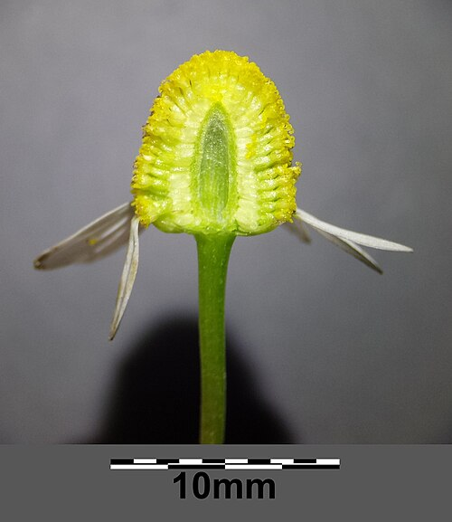
Rumianek pospolity
Matricaria chamomilla · rodzina astrowate
leczniczajadalna
Najpopularniejsze polskie zioło. Charakterystyczny jabłkowy zapach. Pola rumianku — widok typowy dla Mazowsza i Lubelszczyzny. Na żołądek, nerwy, oczy (okłady), skórę. Znoszony przez niemowlęta — herbatka na kolki.
📖 Pełny opis →

Krwawnik pospolity (tysiąclistnik)
Achillea millefolium · rodzina astrowate
leczniczajadalna
Biało-różowe baldachy kwiatów na łąkach. Legenda: Achilles leczył tym żołnierzy. Tamuje krwawienia, reguluje cykl, pobudza trawienie, żółciopędny. Młode liście lekko gorzkawe — do sałatek i sosów.
📖 Pełny opis →
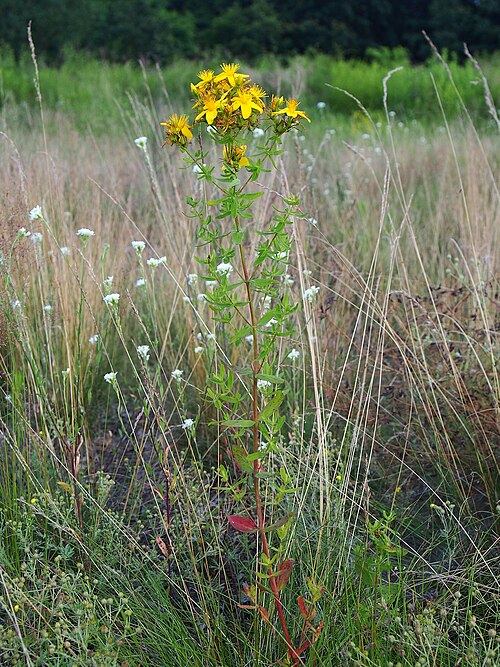
Dziurawiec zwyczajny (świętojańskie ziele)
Hypericum perforatum · rodzina dziurawcowate
lecznicza
Kwitnie na Świętego Jana (24 VI). Żółte kwiaty, kiedy się je rozetrze, dają czerwony sok (hypericyna). Napar na łagodną depresję, stres, klimakterium. Czerwony olejek na rany i oparzenia. UWAGA: silne interakcje z lekami.
📖 Pełny opis →
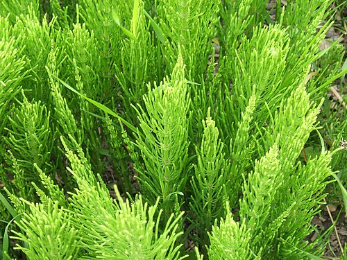
Skrzyp polny
Equisetum arvense · rodzina skrzypowate
lecznicza
Relikt dinozaurowej epoki — skrzypy istnieją 350 mln lat. Rekordowa zawartość krzemu (do 40% SiO₂). Wzmacnia włosy, paznokcie, kości, stawy. Silnie moczopędny. Typowy chwast pól i wilgotnych łąk.
📖 Pełny opis →

Łopian większy (rzep)
Arctium lappa · rodzina astrowate
leczniczajadalna
Imponująca roślina do 2 m. Rzepy zainspirowane Velcro! Korzeń jadalny gotowany — w Japonii znany jako „gobo" (burdock). Oczyszcza krew, zwalcza trądzik. Nalewka na cebulki włosów — klasyczny środek łysiejących mężczyzn.
📖 Pełny opis →

Mięta pieprzowa / mięta polna
Mentha × piperita / M. arvensis · rodzina jasnotowate
leczniczajadalna
Mięta pieprzowa to mieszaniec ogrodniczy, mięta polna rośnie dziko na wilgotnych łąkach i brzegach rowów. Mniejsza zawartość mentolu u polnej, ale równie aromatyczna. Trawienie, mdłości, migreny, świeży oddech. Kulinarnie wszechstronna.
📖 Pełny opis →
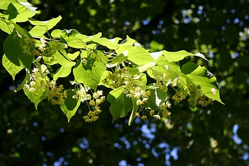
Lipa drobnolistna
Tilia cordata · rodzina ślazowate
leczniczajadalna
Drzewo, nie chwast — ale nieodłączny element polskiego krajobrazu wsi i alei. Kwiaty przez 10-14 dni w czerwcu–lipcu. Herbatka od babci na przeziębienie, napotna i uspokajająca. Miód lipowy — najcenniejszy w Polsce.
📖 Pełny opis →
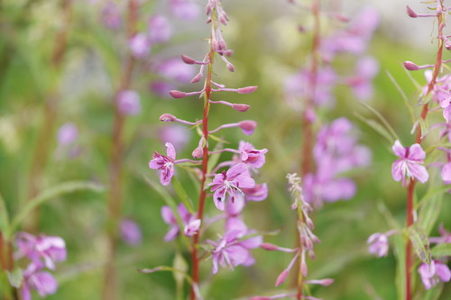
Wierzbówka kiprzyca (Iwan-herbata)
Chamerion angustifolium (Epilobium angustifolium) · rodzina wierzbownicowate
leczniczajadalna
Słupy różowych kwiatów na polanach i pogorzeliskach. Znana jako „Iwan-herbata" (Rosja) — po fermentacji liści powstaje koporska herbata (Koporye tea) o łagodnym smaku. Bogata w witaminę C (3× więcej niż cytryna). Pąki i liście jadalne surowe lub gotowane. Łagodnie uspokajająca, na prostatę.
⚠ Liście surowe w dużych ilościach mają działanie przeczyszczające.
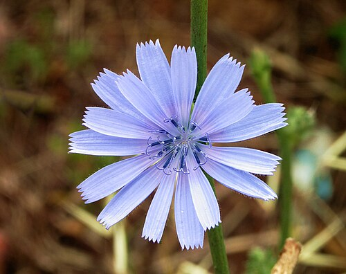
Cykoria podróżnik
Cichorium intybus · rodzina astrowate
leczniczajadalna
Błękitne gwiazdki przy polskich drogach — jedna z najpiękniejszych chwastów. Korzeń prażony = kawa zbożowa (popularna w PRL i II wojnie). Liście gorzkawe, do sałatek. Prebiotyczna inulina w korzeniu. Wspiera wątrobę, trawienie, reguluje cukier.
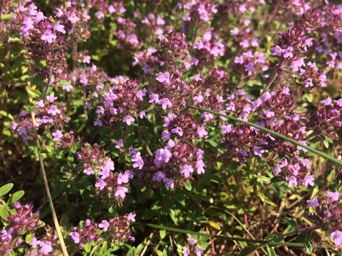
Macierzanka piaskowa (dziki tymianek)
Thymus serpyllum · rodzina jasnotowate
leczniczajadalna
Aromat tymianku na suchych, piaszczystych łąkach. Różowo-fioletowe kwiatki tworzą dywany. Silnie antyseptyczna, wykrztuśna (na kaszel, oskrzela). Kulinarnie: wyśmienita przyprawa do mięs, twarogu, zup. Bogata w tymol i karwakrol.
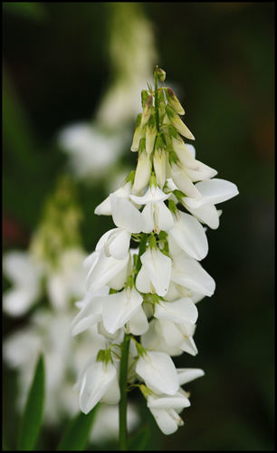
Nostrzyk żółty (klematis)
Melilotus officinalis · rodzina bobowate
lecznicza
Wysokie rośliny z żółtymi gronami kwiatów o słodkim zapachu skoszonego siana (kumaryna). Pomocny przy żylakach, obrzękach i zakrzepicy — kumaryna zmniejsza krzepliwość krwi. Roślina pszczelarzy. Przy drogach i polach.
⚠ Nie stosować z lekami przeciwzakrzepowymi (warfaryna). Nie przekraczać dawek — kumaryna hepatotoksyczna w nadmiarze.
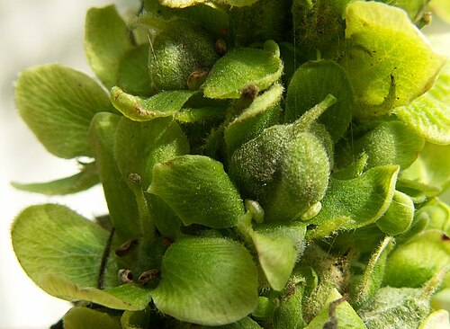
Dziewanna wielokwiatowa / kutnerowata
Verbascum thapsus / V. phlomoides · rodzina trędownikowate
lecznicza
Majestatyczna roślina do 2 m z grubą łodygą pokrytą wełnistymi włoskami i szczytem żółtych kwiatków. Jedna z najstarszych roślin leczniczych (Egipt, Grecja). Kwiat na kaszel, chrypkę, bóle ucha (olej). Bezpieczniejsza alternatywa dla podbiału.
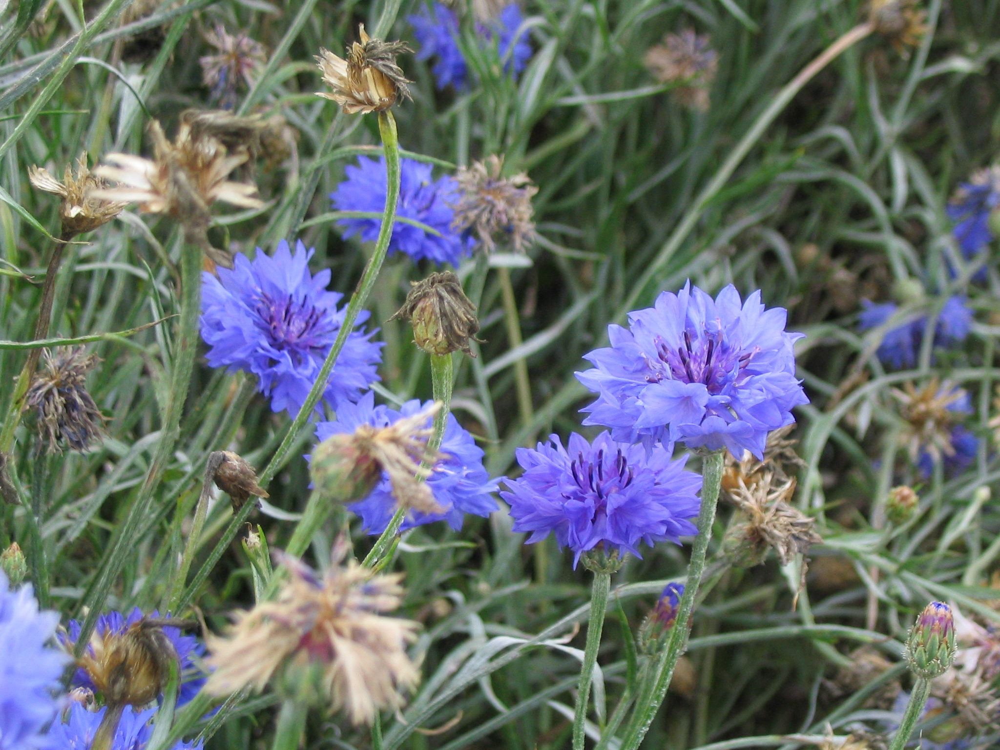
Bławatek (chaber bławatek)
Centaurea cyanus · rodzina astrowate
leczniczajadalna
Symbol polskich pól zbożowych. Niebieskie kwiaty – jaskrawe atrakcyjne dla pszczół. Kwiaty jadalne (dekoracja potraw), herbata na oczy (płukanka przy zapaleniu). Barwnik do tkanin. Coraz rzadszy przez chemizację rolnictwa — chronić!
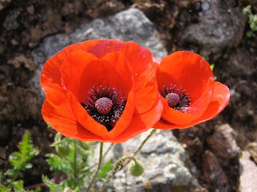
Mak polny (samosiejka)
Papaver rhoeas · rodzina makowate
leczniczajadalna
Ogniste czerwone pola — widok wspomniany w poematach. Tylko płatki, bez białego mleczka (nie mak lekarski!). Płatki na syrop uspokajający (łagodny). Nasiona jadalne. Pola makowe chronione w UK jako siedlisko. Roślina polnych pól i miedzach.
⚠ Nie mylić z makiem lekarskim (Papaver somniferum). Cały mak polny (poza płatkami) zawiera toksyczne alkaloidy.
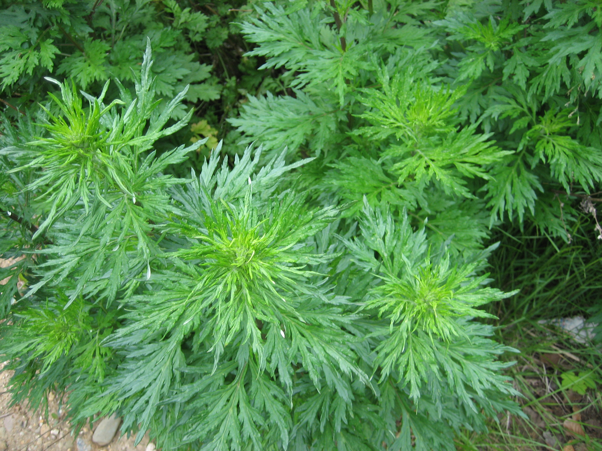
‹
›
1/3


Bylica pospolita
Artemisia vulgaris · rodzina astrowate
lecznicza
Wysoka bylina (do 2 m) przy drogach, płotach, śmietnikach. Intensywny aromatyczny zapach. Przyprawa do tłustych mięs — ułatwia trawienie. Herbata pobudzająca trawienie i apetyt.
🔍 Jak rozróżnić bylice?
Kolor liściPospolita: zielone z wierzchu, biało-filcowe od spodu
Kolor liściPiołun: srebrzysto-szare z OBU stron ← główna różnica
ZapachAromatyczny, ziołowy, lekko kamforowy
ZapachIntensywnie gorzki, piołunowy, silniejszy
ŁodygaPurpurowawa, prążkowana, do 2 m
ŁodygaSzarawa, u podstawy drewnieje, do 1 m
✓ Szybki test: zgnieć liść — piołun jest intensywnie gorzki, pospolita tylko lekko gorzko-aromatyczna. Piołun wygląda cały jak "posrebrzony".
⚠ Nie stosować w ciąży (poronny). Alergia u uczulonych na astrowate.
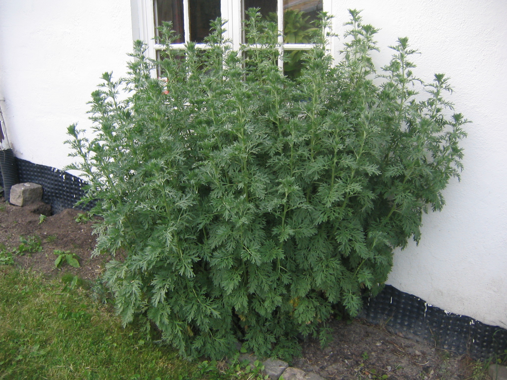
‹
›
1/4
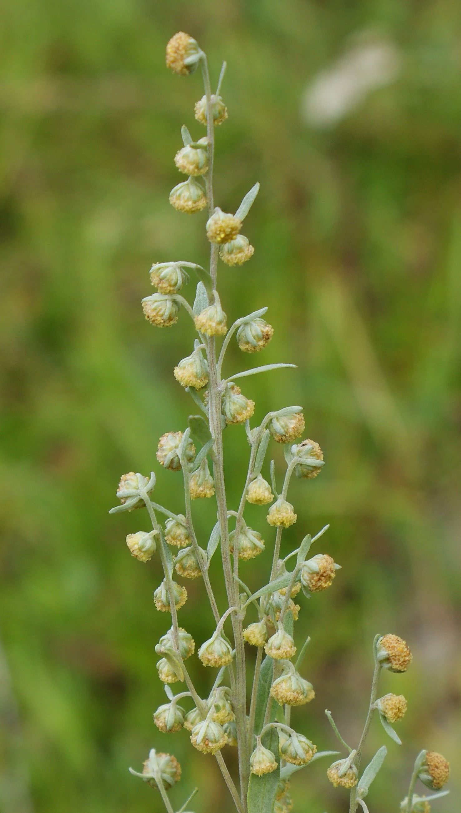
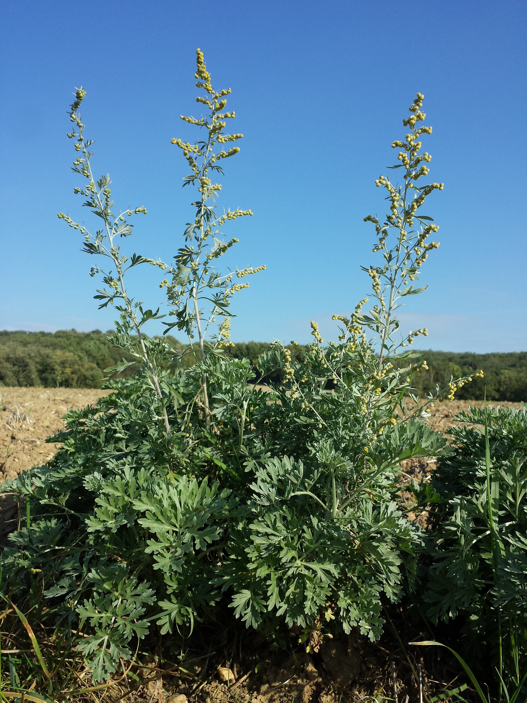
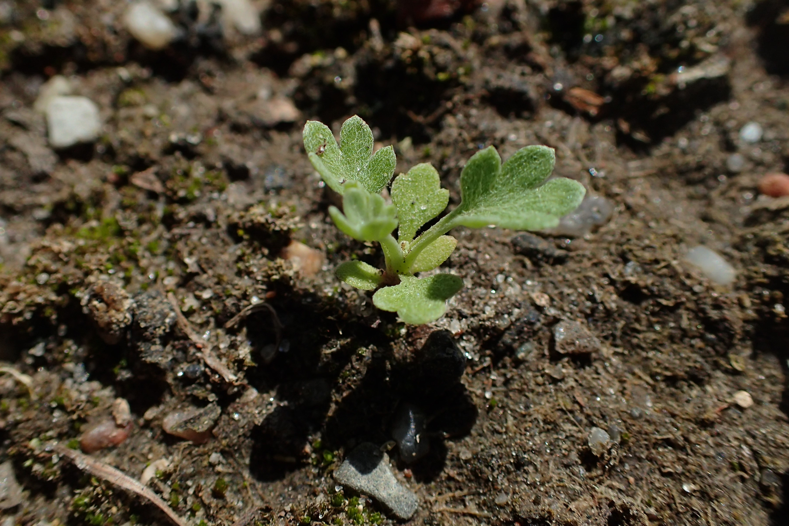
Bylica piołun (absynt)
Artemisia absinthium · rodzina astrowate
lecznicza
Srebrzysto-szara roślina (liście owłosione z obu stron), intensywnie gorzka. Baza absynthu i Vermouth. Silne działanie przeciwrobacze (tujon). Na układ trawienny, brak łaknienia. Rośnie na suchych, słonecznych miejscach.
🔍 Jak rozróżnić od bylicy pospolitej?
Piołun (ta roślina)Liście srebrzysto-szare z OBU stron — jak posrebrzane
Pospolita (podobna)Liście zielone z wierzchu, białe TYLKO od spodu
Kwiaty piołunuDrobne, kuliste, zwisające, żółtawe (nie widać płatków)
Kwiaty pospolitejDrobne, podłużne, rudobrązowe lub żółtawe, wyprostowane
✓ Pewny test: cała roślina piołunu wygląda „posrebrzono" — jakby była pokryta cienkim białym kurzem z obu stron liścia. Intensywna goryczka na języku natychmiast potwierdza gatunek.
⚠ Tujon neurotoksyczny w nadmiarze. NIE stosować w ciąży i karmieniu. Tylko krótkie kuracje.
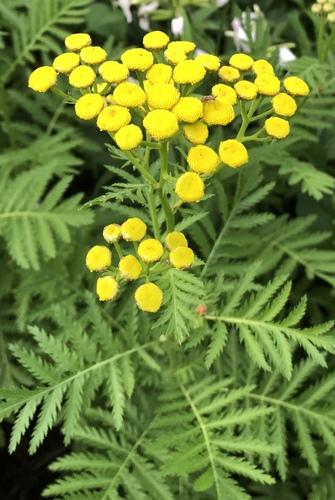
Wrotycz pospolity
Tanacetum vulgare · rodzina astrowate
leczniczatoksyczna ⚠
Żółte guziczkowate kwiaty bez płatków. Intensywny kamforowy zapach odstraszający owady. Naturalny insektycyd — rozkładany w szafkach i przy oknach. Historycznie na robaki jelitowe i opóźniane miesiączki — dziś ostrożnie stosowany.
⚠ Tujon w dużych dawkach toksyczny (neurotoksyczny). NIE stosować wewnętrznie w ciąży. Zewnętrznie (nacieranie) — bezpieczny.
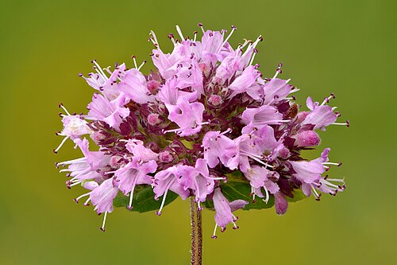
Lebiodka pospolita (dziko oregano)
Origanum vulgare · rodzina jasnotowate
leczniczajadalna
Dzika forma oregano — nieco delikatniejsza od śródziemnomorskiego, ale aromatyczna. Kwitnie różowo-fioletowo na suchych łąkach, skrajach lasów. Doskonała przyprawa do pizzy, zup, mięs. Silnie antyseptyczna, wykrztuśna na kaszel, bóle gardła.
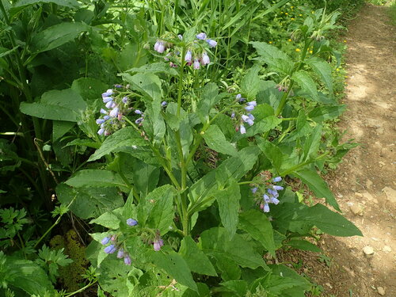
Żywokost lekarski (kostnica)
Symphytum officinale · rodzina ogórecznikowate
lecznicza
Wielka szorstka roślina wilgotnych łąk i rowów. Historycznie — sławna na złamania i skręcenia (alantoin przyspiesza gojenie kości). Maść żywokostowa dostępna w aptekach. Zewnętrznie: bóle stawów, skręcenia, stłuczenia, opuchlizny.
⚠ Alkaloidy pirolizydynowe — tylko ZEWNĘTRZNIE! Nie stosować wewnętrznie dłużej niż 4-6 tyg. NIE na otwarte rany.
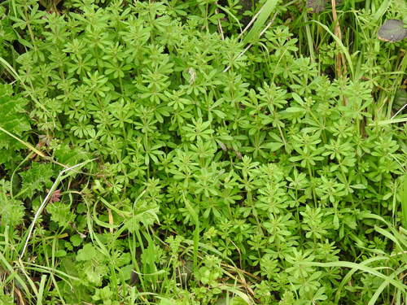
Przytulia czepna (lepka trawa)
Galium aparine · rodzina marzanowate
leczniczajadalna
Roślina czepliwa dzięki haczykowatym włoskom — przykleja się do ubrań i zwierząt. Historycznie jako filtr (robiono z niej sito do mleka). Herbata oczyszczająca limfę i krew, moczopędna. Surowe nasiona prażone = namiastka kawy. Pędy w sałatkach (miękkie wiosną).
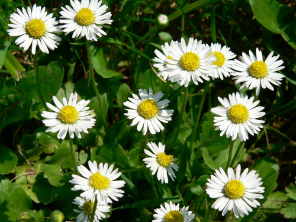
Stokrotka pospolita
Bellis perennis · rodzina astrowate
leczniczajadalna
Symbol wiosennych trawników. Małe białe kwiatki — jadalne (sałatki, dekoracje). Napar na kaszel i chrypkę. Żywica na drobne rany. Pąki marynowane jak kaparki. Jeden z symboli niewinności w folklorze.
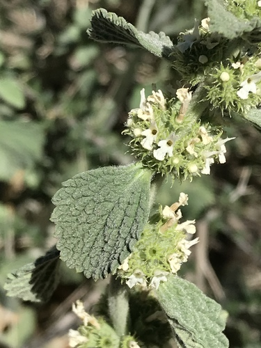
Szanta zwyczajna (horehound)
Marrubium vulgare · rodzina jasnotowate
lecznicza
Wełnista, srebrzystozielona roślina z małymi białymi kwiatkami w okółkach. Intensywnie gorzki smak. Jeden z biblijnych gorkich ziół (Pascha). Klasyczne zioło na kaszel, bronchit, chrypkę. Cukierki i syrop szantowy — popularne w Anglii i USA.
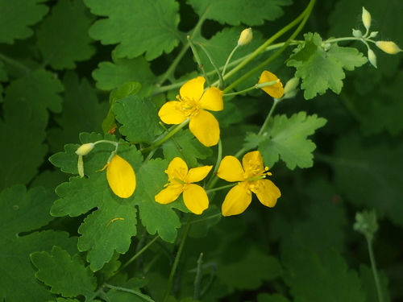
Glistnik jaskółcze ziele
Chelidonium majus · rodzina makowate
leczniczatoksyczna ⚠
Żółty mleczny sok (chelidonina, berberyna) na kurzajki i brodawki — skuteczny środek dermatologiczny. Kwiaty żółte, 4 płatki. Roślina cieni — przy ścianach, płotach, w zaroślach. Silne działanie na wątrobę i żółć (małe dawki). Toksyczna przy spożyciu!
⚠ Toksyczna — stosować TYLKO zewnętrznie (mleczny sok na brodawki). Nie spożywać wewnętrznie bez specjalistycznej porady!
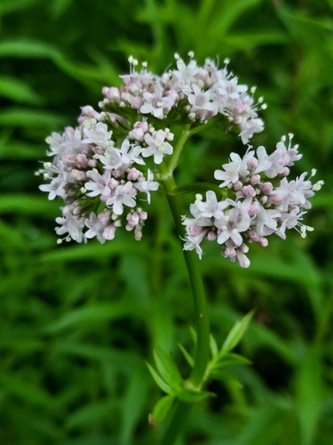
Kozłek lekarski (waleriana)
Valeriana officinalis · rodzina kozłkowate
lecznicza
Roslina mokrych lak i brzegov wod. Rozowawte baldachy kwiatowe o specyficznym zapachu. Korzen (wykopywany jesienia lub wiosna) to surowiec farmaceutyczny na bezsennosc, nerwowosc i stres. Zawiera kwas walerianowy i liczne alkaloidy. Jedno z najwazniejszych ziol uspokajajacych w Europie.
Dlugotrwale stosowanie moze powodowac bole glowy. Nie prowadzic pojazdow po wypiciu. Nie laczyc z alkoholem.
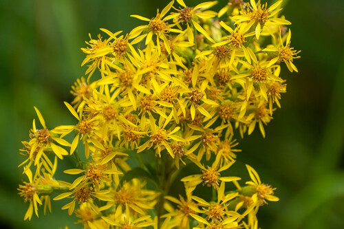
Nawłoć pospolita
Solidago virgaurea · rodzina astrowate
lecznicza
Zlociste wiechy kwiatowe na skrajach lasow i lak (VII–X). Jedno z najwazniejszych ziol moczopednych — na zapalenie drog moczowych, kamice nerkowa, dne moczanowa. Zawiera saponiny, flawonoidy i taniny. Lagodzi stany zapalne ukladu moczowego.
Nie mylic z inwazyjnym gatunkiem nawloc kanadyjska — nawloc pospolita jest nizsza i nie tworzy rozleglych zarrosli.
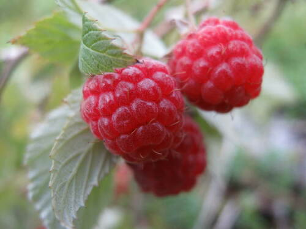
Malina właściwa
Rubus idaeus · rodzina różowate
jadalnalecznicza
Kolczasty krzew skrajow lasow i zrebow. Czerwone owoce (VII–VIII) bogate w witamine C, antocyjany i kwas elagowy. Liscie malinowe to herbata napotna i regulujaca cykl miesiaczkowy. Syrop malinowy — klasyczny srodek napotny na przeziebienia i goraczke. Jedna z najpopularniejszych polskich roslin zielarskich.
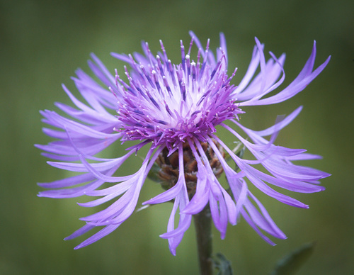
Chaber łąkowy
Centaurea jacea · rodzina astrowate
lecznicza
Rozowo-fioletowe kwiaty dekorujace polskie laki od czerwca do pazdziernika. Bardzo wazna roslina miodna dla pszczol i motyli. W ziololecznictwie stosowany na choroby skory, rany i bol glowy. Napar moczopedny i przeciwzapalny. Nie mylic z chabrem blawatkiem (blekitne kwiaty pol zbozowych).
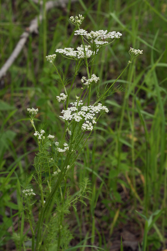
Kminek zwyczajny
Carum carvi · rodzina selerowate
jadalnalecznicza
Roslina dwuletnia — biale baldachy na lakach i ugorach. Nasiona (VII–VIII) to klasyczna polska przyprawa do chleba, bigosu, kapusty, serow. Herbata z kminku — najlepsza na kolki niemowlece i wzdecia. Zawiera karwon i limonen. Jeden z najstarszych gatunkow uprawnych w Polsce.
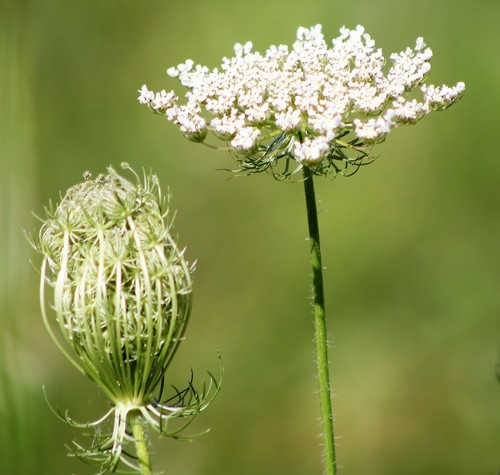
Marchew zwyczajna (dzika)
Daucus carota · rodzina selerowate
jadalnalecznicza
Dziki przodek marchwi ogrodowej. Biale baldachy z charakterystycznym purpurowym kwiatkiem posrodku. Cienki korzen jadalny przed kwitnieniem. Nasiona stosowane moczopednie i przy zaburzeniach trawienia. Bogate w beta-karoten. Roslina dwuletnia — rosnie na suchych lakach i przydrożach.
UWAGA: Nie mylic z silnie trujacym szczwolem plamistym (Conium maculatum) i szalejem (Cicuta virosa)! Marchew poznasz po zapachu marchwi i purpurowym kwiatku posrodku baldachu.
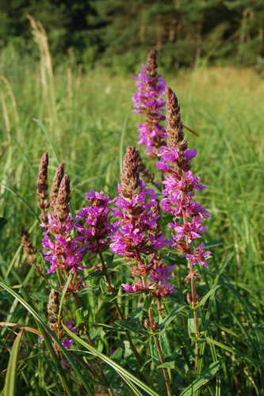
Krwawnica pospolita
Lythrum salicaria · rodzina krwawnicowate
lecznicza
Malownicze rozowo-purpurowe lany na mokrych lakach i brzegach wod (VI–IX). Bogata w garbniki i flawonoidy — silnie sciagajaca. Napar na biegunki (rowniez u dzieci), zapalenia jamy ustnej, plukanie ran i skory. Jedna z najskuteczniejszych polskich roslin sciagajacych.
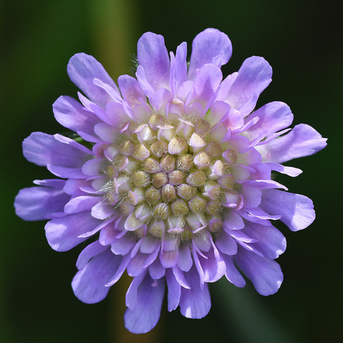
Driakiew polna
Knautia arvensis · rodzina szczeciowate
lecznicza
Liliowoniebieskie kuliste kwiatostany na suchych lakach i przydrożach (VI–X). Jedna z piekniejszych roslin polskich lak. Wazna roslina miodna dla pszczol i motyli. Napar z korzenia i ziela stosowany na choroby skory, egzemy, tradzik i trudno gojace sie rany.
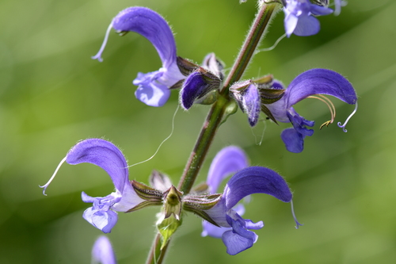
Szałwia łąkowa
Salvia pratensis · rodzina jasnotowate
leczniczajadalna
Dziki kuzyn szalwii ogrodowej — niebiesko-fioletowe kwiaty zdobia suche laki i zbocza wapienne. Aromat zbliżony do szalwii lekarskiej. Napar antyseptyczny, wyrztuśny i regulujacy pocenie. Liscie do gotowania i herbat. Stosowana na anginy, stany zapalne dziasel i jamy ustnej.
Olej zawiera tujon — nie stosowac w ciazy i przy padaczce.
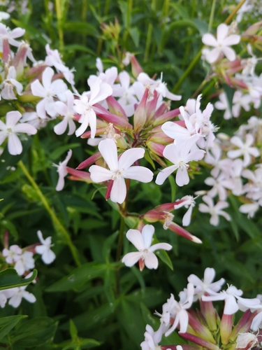
Mydlnica lekarska
Saponaria officinalis · rodzina goździkowate
lecznicza
Rozowe kwiaty przy drogach i na brzegach lasow (VI–IX). Korzen i liscie zawieraja saponiny — pieniace sie w wodzie jak mydlo. Historycznie uzywana do prania delikatnych tkanin i welny. Napar wyrztuśny na zapalenie oskrzeli. Zewnetrznie na luszczyc i egzemy.
Saponiny moga draznic blony sluzowe — nie przekraczac zalecanych dawek w naparach wewnetrznych.
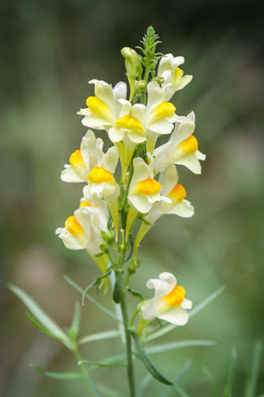
Lnica pospolita (lwia paszcza polna)
Linaria vulgaris · rodzina babkowate
lecznicza
Zolte kwiatki z pomaranczowa plamka — jak miniatura lwiej paszczy. Bardzo pospolita na przydrożach, torach kolejowych i ugorach (VI–X). Ziele stosowane zewnetrznie na hemoroidy, egzemy i trudno gojace sie rany. Napar moczopedny i przeczyszczajacy w malych dawkach.
Nie stosowac wewnetrznie w duzych dawkach — toksyczna przy przedawkowaniu. Glowne zastosowanie to zewnetrzne masci i oklady.
Jesień (sierpień – październik)
Czas owoców i korzeni. Zbieramy dziko rosnące owoce leśne i przetwarzamy zapasy na zimę.
Dzika róża (szypszyna)
Rosa canina · rodzina różowate
leczniczajadalna
Krzew z różowymi lub białymi kwiatami (VI–VII) i pomarańczowo-czerwonymi owockami (VIII–X). Owoce zawierają 20× więcej witaminy C niż cytryna! Herbata (muszkaty, biodra), dżem, nalewka, syrop. Leczniczo: odporność, przeziębienia, reumatyzm, układ moczowy.
⚠ Usunąć nasionka i włoski z owocu przed jedzeniem (podrażniają gardło — dawna szkolna zabawa „świerzbówka").
Głóg dwuszyjkowy / jednoszyjkowy
Crataegus laevigata / C. monogyna · rodzina różowate
leczniczajadalna
Krzew z białymi baldachami kwiatów (V) i czerwonymi „jabłuszkami" (IX–X). Jeden z ważniejszych ziół kardiologicznych — reguluje ciśnienie, wzmacnia mięsień sercowy, antyarytmicznie. Owoce do dżemów, kompotów, nalewki. Kwiaty do herbaty.
⚠ Silne działanie sercowe — nie łączyć z lekami na serce (glikozydy, beta-blokery) bez konsultacji.
Tarnina (śliwa tarnina)
Prunus spinosa · rodzina różowate
jadalnalecznicza
Ciernisty krzew z drobnymi ciemno-sinawo-czarnymi owocami (IX–XI). Surowe bardzo cierpkie, po przemrożeniu słodsze. Nalewka z tarniny — polska klasyka, „śliwowica". Konfitury i dżemy. Kwiaty (III–IV) na herbatę łagodnie przeczyszczającą i oczyszczającą krew.
Jeżyna (ostrężyna)
Rubus fruticosus / R. caesius · rodzina różowate
jadalnalecznicza
Kolczaste zarośla na skrajach lasów, miedzach, żywopłotach. Czarne owoce (VII–X) pełne antocyjanów (antyoksydanty). Liscie — herbata garbnikowa, ściągająca (biegunka, angina, dziąsła). Owoce: dżemy, nalewka, sok, wino. Kwiaty (V–VII) — miód jeżynowy.

Czarny bez (owoce)
Sambucus nigra · rodzina piżmaczkowate
leczniczajadalnasurowe trujące ⚠
Ciemnoczarne grona owoców wiszące w dół — po gotowaniu silne wsparcie odporności. Antocyjany, witamina C, żelazo. Syrop z owoców bzu = polska odpowiedź na Sambucol. Tylko po gotowaniu — surowe powodują wymioty.
📖 Pełny opis →
Poziomka leśna
Fragaria vesca · rodzina różowate
jadalnalecznicza
Miniaturowa, aromatyczna wersja truskawki. Owoce intensywnie słodkie (VI–VIII). Liście — herbata wzmacniająca, ściągająca, moczopędna. Korzeń — płukanka na afty i zapalenia dziąseł. Na skrająch lasów, polanach, miedzach. Bezcenny smak lata.
Nawłoć kanadyjska (inwazyjna)
Solidago canadensis · rodzina astrowate
inwazyjnalecznicza
Agresywna roslina inwazyjna z Ameryki Polnocnej — opanowuje brzegi rzek, niezagospodarowane tereny i odlogi. Zlote wiechy kwiatowe (VIII–X) o wyzszosci do 2 m. Mimo inwazyjnosci — skuteczna moczopednie, podobnie jak nawloc pospolita. Glownie nalezy ja usuwac i ograniczac rozprzestrzenianie.
Inwazyjny gatunek obcy — nie sadzimy, usuwamy! Powoduje zanikanie rodzimej roslinnosci lacowej.
Dostępne prawie cały rok
Rośliny aktywne przez wiele miesięcy lub dostępne w kilku sezonach — szczególnie wartościowe dla ciągłości zbiorów.
Krwawnik — cykl od wiosny do jesieni
Achillea millefolium
leczniczajadalna
Kwitnie od czerwca do października, liście od wiosny — wyjątkowo długi sezon zbiorów. Liście zimą pozostają zielone pod śniegiem (evergreen w cieplejsze zimy). Zbieramy przez cały sezon wegetacyjny.
📖 Pełny opis →
Pokrzywa — od wiosny do późnej jesieni
Urtica dioica
leczniczajadalna
Liście pokrzywy zbieramy od marca do września — długi sezon. Wiosną (marzec–kwiecień) najdelikatniejsze i najmniej włochate — na szpinak. Latem — na herbatę i nalewkę. Jesienią korzeń — na leczenie prostaty.
📖 Pełny opis →
Babka — niemal cały rok
Plantago lanceolata / P. major
lecznicza
Liście babki dostępne od wczesnej wiosny aż do pierwszych mrozów. Zimozielona w łagodne zimy. Idealny przykład rośliny "zawsze dostępnej" — rośnie wszędzie przy drogach, ścieżkach i łąkach.
📖 Pełny opis →
⚠ Uwaga — rośliny toksyczne na polskich łąkach
Rośliny TRUJĄCE pospolite na polskich łąkach — konieczna ich znajomość, by unikać pomyłek!
Jaskier ostry (jaskier rozłogowy)
Ranunculus acris / R. repens · rodzina jaskrowate
trująca ⚠
Żółte kwiaty na wilgotnych łąkach — pospolity widok. Surowy toksyczny (protoanemonina — powoduje pęcherze, oparzenia). Po wysuszeniu lub gotowaniu tracą toksyczność (w suszonych ziołach historycznie stosowany). Nie zbierać!
⚠ TOKSYCZNY na surowo! Dotknięcie powoduje podrażnienie skóry. Spożycie — poważne zatrucie.
Bez hebd (trujący mylnik czarnego bzu)
Sambucus ebulus · rodzina piżmaczkowate
silnie trująca ⚠
ZIELNA BYLINA (nie krzew!) do 1,5 m. Czarne owoce podobne do czarnego bzu — ale baldachy skierowane KU GÓRZE (u czarnego bzu zwisają). Całość intensywnie, nieprzyjemnie śmierdzi. Silnie toksyczny — wymioty, biegunka, drgawki. NIE MYLIĆ z czarnym bzem!
⚠ SILNIE TRUJĄCY. Rozróżnienie: bez hebd ma wznoszone baldachy, śmierdzi, jest byliną (nie drewnieje). Czarny bez = krzew/drzewo, zwisające owoce, biały szpik.
Skrzyp błotny (mylnik skrzypu polnego)
Equisetum palustre · rodzina skrzypowate
trująca ⚠
Rośnie na mokradłach i przy rowach — podobny do polnego, ale z gałązkami o ostrych kątach i mniejszą zawartością krzemu. Toksyczny dla koni i bydła (palusytryna). Nie używać jako zamiennik skrzypu polnego! Rozróżnienie: skrzyp polny ma gałązki z tępymi kątami.
⚠ Zbierać skrzyp tylko z suchych piaszczystych łąk i pól. Na mokradłach = niebezpieczny skrzyp błotny.
Lulek czarny
Hyoscyamus niger · rodzina psiankowate
silnie trująca ⚠
Lepka, cuchnąca roślina z żółtawymi kwiatami w fioletowe żyłki. Historycznie „mikstura czarownic" i w narkotycznej piwie. Zawiera hioschyaminę i skopolaminę — silne halucynogeny. Cała roślina śmiertelnie trująca. Typowa przy drogach, ruinach.
⚠ SILNIE TRUJĄCY. Nie dotykać — skopolamina wchłania się przez skórę. Szczególnie niebezpieczny dla dzieci.
Bieluń dziędzierzawa (trąba anioła)
Datura stramonium · rodzina psiankowate
silnie trująca ⚠
Duże białe trąbkowate kwiaty i kolczasta torebka nasienna. Silny, nieprzyjemny zapach. Wszystkie części trujące — atropina, hioschyamina, skopolamina. Dawka terapeutyczna bliska dawce śmiertelnej. Historycznie w medycynie (astma) — dziś tylko pod kontrolą specjalistów.
⚠ ŚMIERTELNIE TRUJĄCY. Nie dotykać — szczególnie oczy! Zatrucia (głównie młodzież szukająca odurzenia) kończą się hospitalizacją.
Ostrożeń polny (przytyk)
Cirsium arvense · rodzina astrowate
jadalna (korzenie)
Jeden z najbardziej uciążliwych chwastów polnych. Fioletowe kwiatki bez widocznych płatków (jak u ostu). Pospolity. W rzeczywistości nie jest toksyczny — korzeń historycznie jadalny gotowany. Liście młode (bez kolców) też jadalne. Jednak jest bardzo uciążliwym agresywnym chwastem rolniczym.
Konwalia majowa
Convallaria majalis · rodzina szparagowate
silnie trujacachroniona
Jeden z najbardziej rozpoznawalnych i niebezpiecznych kwiatow polskich lasow i ogrodow. Biale dzwonkowate kwiatki o intensywnym zapachu. CALA ROSLINA jest silnie trujaca — zawiera glikozydy nasercowe (konwalatozyd). Dawniej uzywana w kardiologii, dzis tylko w farmacji.
SILNA TRUCIZNA — powoduje zaburzenia rytmu serca, wymioty, drgawki. Szczegolnie niebezpieczna dla dzieci i zwierzat domowych. Nie pomylic z czosnkiem niedzwiedzim przed kwitnieniem!